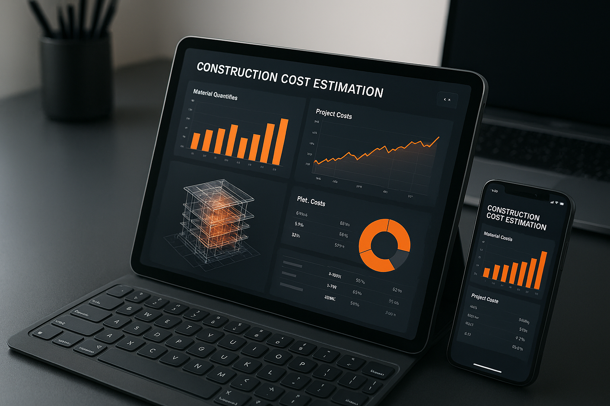

BIM Takeoff | Kosztorysowanie BIM 5D | Przedmiary i Obmiary
Eksperci w Kosztorysowaniu i Przedmiarach
Usługi BIM Takeoff
Ponad 2000 projektów zrealizowanych w zakresie zabudowy wewnętrznej, robót konstrukcyjnych, ochrony przeciwpożarowej i fasad. Od szczegółowych przedmiarów po kompletne pakiety przetargowe - dostarczamy na całym świecie.
O Nas
Eksperci w Kosztorysowaniu z Międzynarodowym Doświadczeniem
20 lat doświadczenia | 2000+ Projektów | Wielka Brytania, Australia i Europa
Specjalistyczna Wiedza Branżowa
Systemy Suchej Zabudowy | Ochrona Przeciwpożarowa | Fasady | Roboty Konstrukcyjne
Zgodność z Polskimi Standardami
Zgodność z ISO 19650 | 2000+ Projektów UK/EU/AU | Gotowość BIM 2030
Kosztorysowanie BIM 5D – Międzynarodowe Standardy, Lokalna Wiedza
Łączymy międzynarodowe doświadczenie z pełną znajomością polskiego rynku budowlanego. Specjalizujemy się w pakietach wysokiej wartości i złożoności - systemy suchej zabudowy, struktury, ochrona przeciwpożarowa i elewacje.
Dzięki ponad 2000 zrealizowanym projektom w Wielkiej Brytanii, Australii i Europie, zapewniamy precyzję potrzebną do wygrywania rentownych zleceń. Stosujemy międzynarodowe standardy przy pełnej zgodności z polskimi wymogami.
Oferujemy kosztorysy zgodne z wymogami BIM 2030, wspierając inwestorów i generalnych wykonawców w przygotowaniu do nowych przepisów.

2000+
Zrealizowanych Projektów
12M+
m² Wycenionych
20+
Lat Doświadczenia
90%
Redukcja Czasu Kosztorysowania
Dlaczego Warto z Nami Współpracować?
Międzynarodowe Doświadczenie, Lokalna Specyfika
20 Lat na Rynkach UK, EU i Australii + Znajomość Polskich Standardów
Dwie dekady praktycznego doświadczenia w kosztorysowaniu na wymagających rynkach międzynarodowych. Nasza ekspertyza obejmuje zabudowę wewnętrzną, struktury, ochronę przeciwpożarową i fasady. Łączymy międzynarodowe standardy z pełną zgodnością z polskimi wymaganiami, zapewniając wiarygodne dane do podejmowania decyzji.
Oszczędność Czasu – 90% Szybciej
3 Dni Zamiast 3 Tygodni
Technologia BIM 5D pozwala skrócić czas kosztorysowania o 90% w porównaniu z tradycyjnymi metodami. Wyodrębniamy dane z modeli BIM (Revit, ArchiCAD, Tekla, IFC), dostarczając wyniki gotowe do Państwa oprogramowania kosztorysowego. Typowy czas realizacji: 3-5 dni, zachowując dokładność ±5%.
Optymalizacja Wartości Inwestycji
Analiza Value Engineering
Precyzyjne kosztorysowanie zapobiega przekroczeniom budżetu i marnowaniu materiałów. Nasza analiza i opcje optymalizacji identyfikują oszczędności bez poświęcania jakości czy zgodności z normami lub wymaganiami. Pomagamy wyceniać realnie i unikać niespodzianek podczas realizacji.
Dokumentacja Zgodna ze Standardami
Raporty Gotowe do Audytu i Kontroli
Otrzymują Państwo szczegółowe zestawienia ilości, materiałów i kosztów sformatowane zgodnie z Państwa wymaganiami. Nasze raporty są przejrzyste, śledzone i gotowe do integracji z Państwa systemem. Każdy przedmiar zawiera kontrolę jakości i walidację.
Specjalizacja w Złożonych Pakietach
Prawdziwa Ekspertyza Branżowa
Nasz zespół wnosi praktyczną wiedzę w złożonych pakietach budowlanych. Specjalizujemy się w systemach suchej zabudowy, ochronie przeciwpożarowej, elewacjach oraz robotach konstrukcyjnych. Międzynarodowe doświadczenie w połączeniu z nowoczesną technologią BIM i znajomością polskich przepisów.
Przygotowanie na BIM 2030
Zgodność z Nowymi Wymogami
Wspieramy przygotowanie do wymogów BIM 2030. Specjalizujemy się w systemach bezpieczeństwa pożarowego, renowacji elewacji i wymaganiami dotyczącymi bezpieczeństwa. Precyzyjne planowanie pomaga unikać niespodzianek podczas realizacji inwestycji.
Nasze Usługi
Kosztorysowanie i Planowanie Budżetu
Precyzyjne wyceny zgodne z KNR/KNNR, które pomagają wygrywać przetargi. Od wstępnych kosztorysów po szczegółowe pakiety przetargowe z analizą optymalizacji wartości i oceną ryzyka.
Specjalistyczne Usługi Branżowe
Doświadczenie w systemach suchej zabudowy, ochrony przeciwpożarowej - pasywnej i aktywnej, elewacjach oraz robotach konstrukcyjnych. Ponad 20 lat praktycznego doświaczenia w wycenie skomplikowanych projektów.
Automatyczny Przedmiar z Modeli BIM
Przetwarzanie modeli IFC z Revit, ArchiCAD i Tekla. 90% szybciej niż tradycyjne przedmiary 2D z aktualizacjami w czasie rzeczywistym przy zmianach projektowych. Dokładność ±5%.
Bieżąca Kontrola Kosztów
Regularne raporty kosztowe dla inwestycji 4-6 miesięcznych. System wczesnego ostrzegania przed przekroczeniami budżetu z rekomendacjami optymalizacji wartości.
Kosztorysowanie BREEAM/ESG
Kosztorysowanie śladu węglowego zintegrowane ze śledzeniem materiałów zrównoważonych i weryfikacją zgodności certyfikacyjnej. Wsparcie w osiąganiu celów środowiskowych.
Kosztorysowanie Instalacji MEP
Specjalistyczne kosztorysowanie dla obiektów logistycznych, chłodni, systemów HVAC, instalacji elektrycznych i ochrony przeciwpożarowej.
Analiza Wariantowa
Porównanie alternatywnych rozwiązań projektowych, materiałów i metod budowy. Podejmowanie świadomych decyzji w oparciu o dokładne dane kosztowe.
Kompleksowe Raportowanie
Szczegółowe zestawienia kosztów, wizualne dashboardy i raporty gotowe do eksportu, zintegrowane z Państwa procesem pracy.
Przygotowanie Ofert Przetargowych
Profesjonalna dokumentacja przetargowa i wsparcie w zarządzaniu procesem składania ofert. Kompleksowa koordynacja od strategii cenowej po finalne złożenie oferty.
Tradycyjny Przedmiar z Rysunków 2D
Precyzyjny przedmiar z rysunków 2D i specyfikacji. Szczegółowy pomiar i kwantyfikacja gdy modele BIM nie są dostępne, zachowując dokładność dla tradycyjnej realizacji projektów.
Zarządzanie Danymi BIM
Centralna koordynacja danych projektowych i strukturyzacja informacji BIM. Zarządzanie przepływem informacji, zapewnianie jakości danych przez cały cykl życia projektu.
Logistyka Budowlana
Planowanie logistyki placu budowy, harmonogramowanie dostaw materiałów i koordynacja łańcucha dostaw. Optymalizacja przepływów pracy i efektywna alokacja zasobów.

Nowoczesne Kosztorysowanie BIM 5D
Technologia BIM 5D zapewnia precyzję i szybkość potrzebną w nowoczesnym budownictwie. Nasze usługi pomagają wygrywać rentowne zlecenia przy jednoczesnym zmniejszeniu ryzyka przekroczeń budżetu.
90%
Redukcja czasu kosztorysowania
±5%
Dokładność wyceny
24h
Aktualizacje przy zmianach
Ekspertyza Branżowa
Rozumiemy specyfikę różnych sektorów budownictwa:
Magazyny i Logistyka
Doświadczenie: Centra dystrybucyjne, chłodnie, obiekty fulfillment
Specjalizacja: Realizacja fast-track, obiekty cross-dockingowe, instalacje chłodnicze
Centra Danych
Doświadczenie: Obiekty Tier III/IV
Specjalizacja: Krytyczne systemy MEP, redundancja zasilania, infrastruktura chłodzenia
Deweloperstwo Mieszkaniowe
Doświadczenie: Budownictwo wielorodzinne, projekty mieszane
Specjalizacja: Kosztorysowanie na poziomie lokali, prefabrykacja, efektywność energetyczna
Remediacja i Modernizacja
Doświadczenie: Zgodność z przepisami bezpieczeństwa, modernizacje elewacji
Specjalizacja: Systemy bezpieczeństwa pożarowego, remediacja okładzin, wymogi BIM 2030
Deweloperstwo Komercyjne
Doświadczenie: Biurowce, centra handlowe, kompleksy mieszane
Specjalizacja: Aranżacje najemców, realizacja etapowa, optymalizacja wartości
Opieka Zdrowotna
Doświadczenie: Szpitale, centra medyczne, obiekty specjalistyczne
Specjalizacja: Kompartmentacja przeciwpożarowa, systemy gazów medycznych, redundancja zasilania
Przemysł i Produkcja
Doświadczenie: Zakłady produkcyjne, hale montażowe
Specjalizacja: Konstrukcje ciężkie, systemy dźwigowe, przemysłowe instalacje MEP
Infrastruktura
Doświadczenie: Mosty, tunele, infrastruktura transportowa
Specjalizacja: Konstrukcje sprężane, fundamenty głębokie, systemy inżynieryjne
:::
Dlaczego Międzynarodowi Deweloperzy Nam Ufają
Wieloletnie Doświadczenie
Międzynarodowe Standardy QS
ISO 19650
BIM Poziom 2 Compliance
20 Lat Doświadczenia
UK, EU, Australia
Nasz Proces: Od Modelu BIM do Kosztorysu w 3-5 Dni
1. Przesłanie Modelu + Kick-off
Przekazanie modelu BIM. Spotkanie inicjujące w celu zrozumienia wymagań projektu, zakresu i specyfikacji.
2. Automatyczny Przedmiar + Weryfikacja
Oprogramowanie ekstrahuje ilości automatycznie. Zespół ekspertów sprawdza i waliduje wszystkie pomiary dla zapewnienia dokładności.
3. Analiza Kosztów
Stosujemy aktualne stawki rynkowe, lokalne bazy cenowe (KNR/KNNR) i specyfikacje projektowe do stworzenia szczegółowego zestawienia kosztów.
4. Dostarczenie Raportu
Kompleksowe zestawienie kosztów z wizualnymi dashboardami, porównaniami wariantów i formatami gotowymi do eksportu.
5. Prezentacja + Pytania
Wspólne omówienie raportu, odpowiedzi na pytania i dyskusja o możliwościach optymalizacji wartości.
Projekt Pilotażowy
Oferta Wprowadzająca: Pierwszy projekt z 50% rabatem. Przekonają się Państwo o precyzji i szybkości BIM 5D bez długoterminowych zobowiązań.
Najczęściej Zadawane Pytania
P: Czy znają Państwo polskie standardy i normy kosztorysowe?
O: Oczywiście. Łączymy międzynarodowe standardy z pełną zgodnością z polskimi wymaganiami. Nasze kosztorysy są przygotowane zgodnie z polskimi wymogami, wykorzystując zarówno międzynarodowe doświadczenie, jak i lokalną wiedzę rynkową.
P: Jak szybko mogą Państwo zaktualizować kosztorys przy zmianach projektowych?
O: Technologia BIM 5D pozwala na aktualizacje w czasie rzeczywistym. Gdy następują zmiany w modelu BIM, możemy zaktualizować kosztorys w ciągu 24 godzin, zachowując pełną dokładność wyceny.
P: Czy oferują Państwo bieżącą kontrolę kosztów podczas realizacji?
O: Tak. Zapewniamy regularne raporty kosztowe (tygodniowe lub miesięczne), porównując rzeczywiste koszty z planowanymi. System wczesnego ostrzegania pozwala przewidzieć przekroczenia budżetu zanim staną się problemem.
P: Jakie formaty plików BIM obsługują Państwo?
O: Pracujemy z formatem IFC (Industry Foundation Classes) z Revit, ArchiCAD i Tekla. Obsługujemy również tradycyjne rysunki 2D i specyfikacje, gdy modele BIM nie są dostępne.
P: Czy są Państwo przygotowani na wymogi BIM 2030?
O: Tak. Nasze procesy są zgodne z nadchodzącymi wymogami BIM 2030. Wspieramy klientów w przygotowaniu do nowych przepisów, szczególnie w obszarze bezpieczeństwa pożarowego i elewacji.
P: Czym różnią się Państwo od lokalnych firm kosztorysowych?
O: Przynosimy 20 lat międzynarodowego doświadczenia z rynków, gdzie BIM 5D jest standardem. Łączymy zaawansowaną technologię BIM z pełną znajomością polskich standardów KNR/KNNR. Oferujemy 90% redukcję czasu kosztorysowania przy dokładności ±5%.
Zapraszamy do Współpracy
Dołączą Państwo do 2000+ Projektów, Które Zaufały Naszej Ekspertyzie
Zapraszamy na bezpłatną 30-minutową konsultację lub do rozpoczęcia od projektu pilotażowego z 50% rabatem
Umów Konsultację Sprawdź Potencjalne Oszczędności
Kontakt: info@bimtakeoff.com | +48 508 209 313